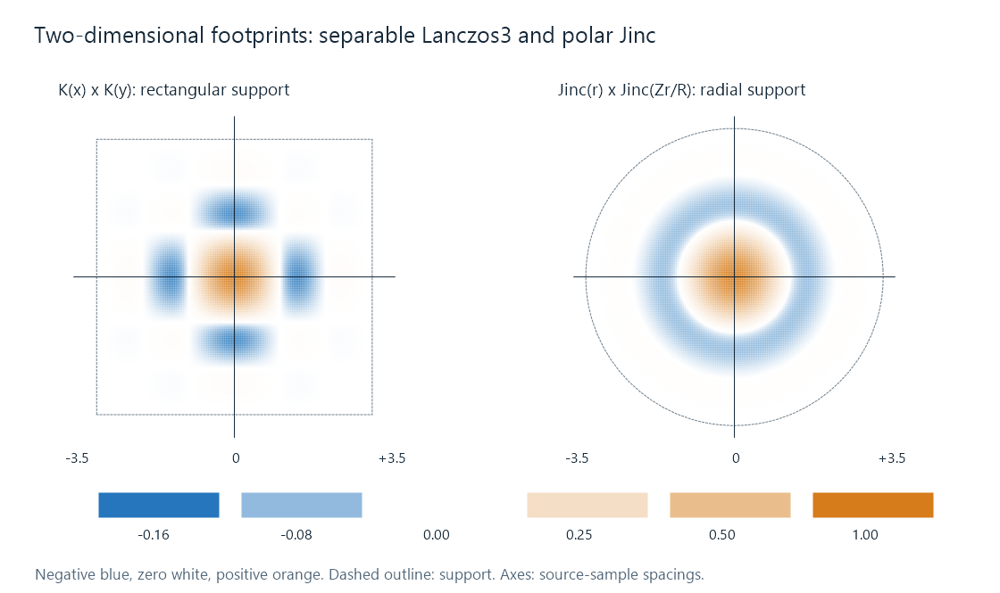

EWA Lanczos (Jinc) Video Scaling
EWA Lanczos uses a radial Jinc-based reconstruction footprint to combine source samples around an output position.

The maps use a shared color legend. The radial example is the unsharpened libplacebo v7.360.1 EWA Lanczos construction, before phase-dependent normalization. The separable example uses Lanczos radius three on each axis.
A separable filter builds its two-dimensional footprint by multiplying horizontal and vertical weights. EWA Lanczos, often called Jinc scaling, instead assigns a weight from radial distance around the requested output position. The different spatial footprint changes which neighboring directions receive the same contribution.
Equal radius, equal radial weight
Place the output position at the origin. Compare the continuous weight function at two offsets, A = (1, 0) and B = (1/√2, 1/√2). Both are exactly one source spacing from the origin. This geometric comparison evaluates the function's shape, rather than choosing two simultaneous samples from one integer lattice.
For a radial filter, their weights are equal because both use r = 1. For separable Lanczos3, their weights are K(1)K(0) and K(1/√2)². The first is zero because sinc(1) is zero; the second is approximately 0.106498.
In the radial construction pictured above, both positions instead have raw weight approximately 0.151279. Thus, moving a feature's orientation can expose a different directional response even when the distances involved look similar.
The maps make the cause visible. Separable multiplication creates axis-related zero lines and a rectangular support. Radial weighting produces circular bands and a circular support for this isotropic case.
The Jinc function supplies a two-dimensional shape
The normalized Jinc convention used here is:
J(r) = 2 J₁(πr)/(πr), with J(0) = 1.
J₁ is the first-order Bessel function. Its oscillation gives Jinc a positive central region followed by alternating lobes, playing a role in radial reconstruction analogous to sinc in one dimension.
The first zero is at r ≈ 1.219669891, rather than the integer zero at one for the normalized sinc convention. Jinc's function and its support geometry together therefore change the weights; a radial version is not obtained by merely replacing x with a distance in the ordinary Lanczos sinc formula.
For the pinned unsharpened example, define R = 3.238315484 and Z = 1.219669891. The raw windowed function is:
W(r) = J(r) × J(Zr/R), for r < R; otherwise W(r) = 0.
The first factor has three lobes inside that support, ending at its third zero. The second stretches Jinc's positive first lobe into a window that reaches zero at R. Their product is what the radial map depicts.
The output is formed by evaluating those weights at contributing source positions, multiplying by their values, and dividing by the weight sum. A flat field then remains flat even as the fractional output coordinate changes the discrete set of distances and contributions.
Where the ellipse in EWA comes from
EWA expands to elliptical weighted average. In the broader resampling framework, an output footprint mapped into source coordinates can be elliptical, for example when its scale differs along two directions. The distance measure can then describe an ellipse rather than a circle.
A simple axis-aligned elliptical coordinate uses r² = (dx/a)² + (dy/b)². Different a and b describe the two axes; a rotated footprint adds the appropriate coordinate rotation. Samples at the same elliptical radius receive the same kernel weight.
The figure uses a circular, radial case to isolate the Jinc construction. Video-rendering libraries also use EWA as a name for their polar reconstruction filters. The kernel, footprint mapping, and normalization establish the concrete operation. General EWA filtering and a particular named Jinc preset are related parts of that description.
A different computation neighborhood
For a fractional midpoint at (0.5, 0.5), the illustrated radius includes 32 integer-grid source positions. At an exactly aligned origin it includes 37. The count changes with phase because a disk intersects a square sample lattice differently as its center moves.
A direct separable radius-three calculation at a fractional position uses a six-by-six set, while its product structure permits reusable horizontal and vertical passes. The radial weights generally cannot be factored into those same independent passes. This affects implementation work and reuse, not just the number of points inside the footprint.
Real GPU implementations can use lookup tables, texture sampling, cutoffs, and other optimizations. The counts here describe the stated mathematical support, not measured texture-fetch counts or playback speed.
Negative lobes and parameter variants
The blue regions of the maps are negative contributions. They can make an edge overshoot its neighboring range, just as signed separable reconstruction can. An anti-ringing stage changes the permissible result or contribution mixture, so its effect belongs alongside the chosen kernel.
Named sharpened Jinc variants can alter parameters or anti-ringing behavior. The plotted weights specifically use the stated unsharpened construction.